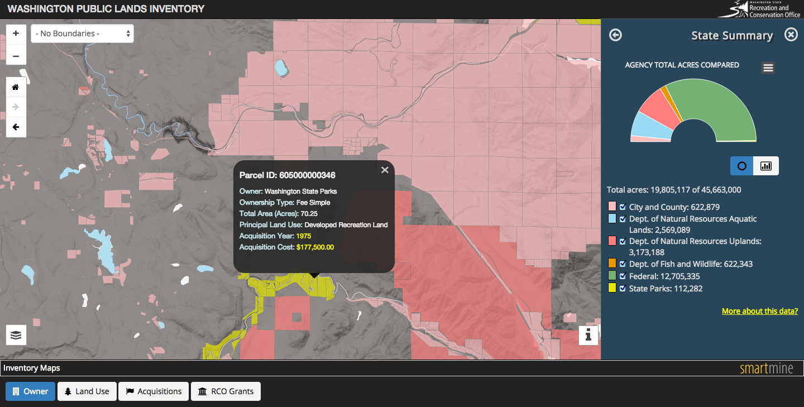
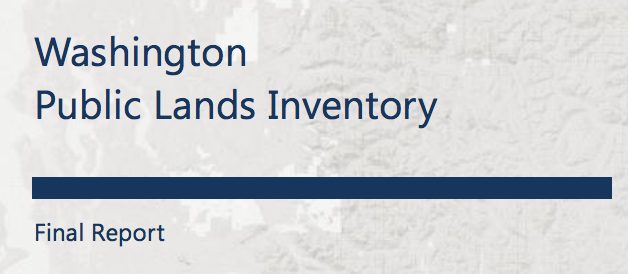

Building Light & Responsive
GIS Web Apps
2014 NW GIS Conference
Blair Deaver / @bcd_mtbPart 1
Washington Public Lands Inventory
Project Overview
Project Results
Part 2
UX First
Building Lean
Measure | Learn | Adapt
Questions

Technology development team at GeoEngineers Inc, a national leader in earth science consulting.
Geospatial | Visualization | Cloud | Products | Solutions
Our Work
Whale Visualizations

Washington Water Cruiser

AvianAudit

Part 1: Project Profile
Washington Public Lands Inventory
State JLARC Proviso
1. The study is a review of the operating budget impacts of recreation and habitat land acquisitions by the departments of fish and wildlife, natural resources, and by the state parks and recreation commission over the past ten years.
2. The study is a review of estimated economic benefits and costs from acquisitions of recreation and habitat lands.
3. The study is an analysis of differences in public land ownership among Washington's thirty-nine counties
4. The report must be submitted to the appropriate policy and fiscal committees of the legislature by December 1, 2014.
Data Compilation
University of Washington’s School of Environmental and Forest Sciences
Data from the 2012 Washington State Parcel Database, with updated information from state agency partners – the Department of Natural Resources (DNR), Department of Fish and Wildlife (WDFW), and the State Parks and Recreation Commission (State Parks).
Data Product
Esri ArcGIS Geodatabase consisting of compilled taxlot data
Web Delivery
Live Demo
Project Report
Part 2: UX First
Our "soapbox"
Responsive, Responsive, Responsive
Can my son or mom use the application?
Fast is never fast enough
Measure everything
Hybrid is OK

"Responsive web design (RWD) is a web design approach aimed at crafting sites to provide an optimal viewing experience—easy reading and navigation with a minimum of resizing, panning, and scrolling—across a wide range of devices (from mobile phones to desktop computer monitors." - Wikipedia
Not Responsive
Responsive
Why?
mobile first
The How?
How?


You are in luck.
Web Frameworks to the rescue
Bootstrap is the dominant framework
Mapping + Bootstrap = awesome
Leaflet + Bootstrap
Bootstrap Map JS
Can a 10 year old use your application?
GIS Diet Plans

Diet questions
Do you need a server or can I use a PaaS?
Can I generalize more?
What can be tiled?
Can I use performance improvements (lazy loading, CDNs, etc)?
Google Analytics Beyond Page Views
Use Google Analytics Event tracking to better understand GIS usage
Google Analytics Event Tracking
_trackEvent(category, action, opt_label, opt_value, opt_noninteraction)
Have lots of tools in your toolbox

Hybrid architectures happen when you focus on UX
In closing
Focus on design and usability
Measure | Test | Learn | Adjust
Fast is never fast enough
Mobile is now the norm